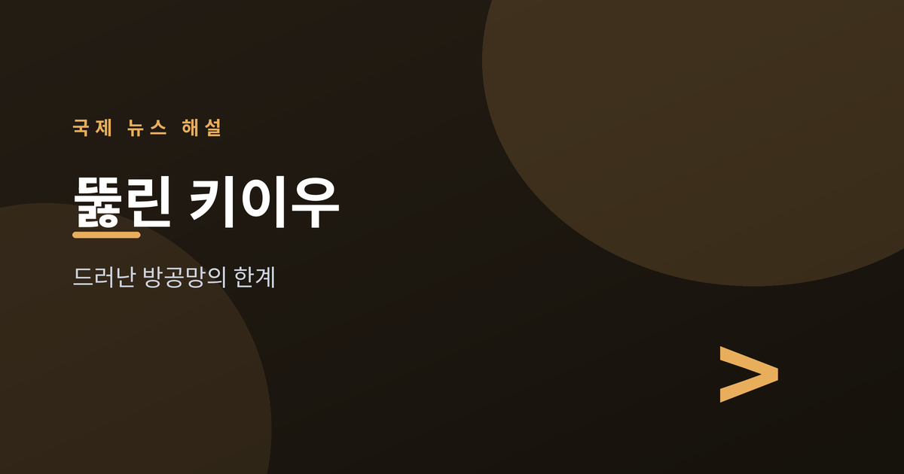
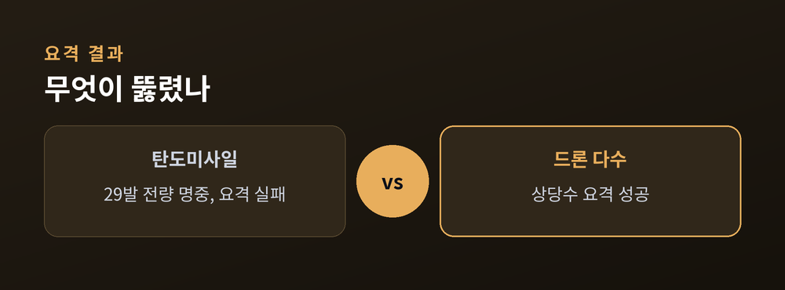
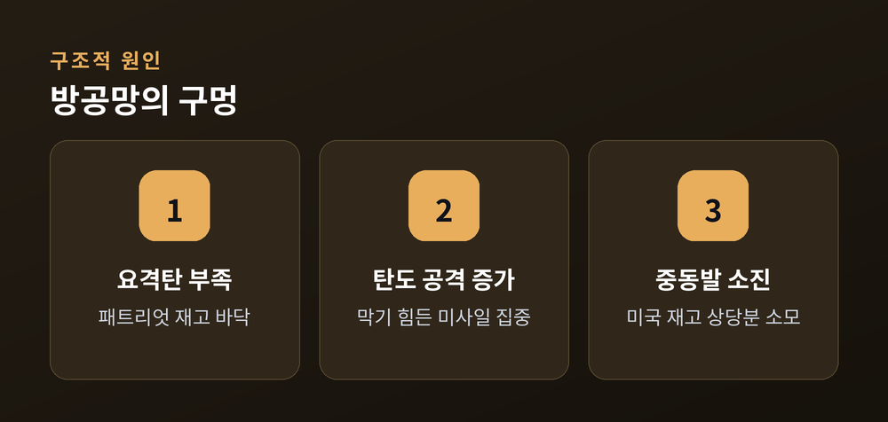
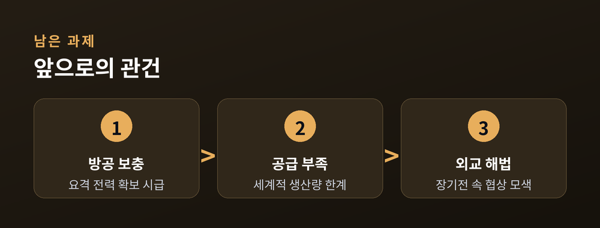

방공망의 한계가 드러났다

이번 글에서는 2026년 7월 초 러시아가 우크라이나에 감행한 대규모 공습과, 그 과정에서 드러난 방공망의 한계를 정리해 보겠습니다. 전쟁이 4년을 넘긴 지금, 무엇이 달라졌는지 사실 위주로 짚어봅니다.
2026년 7월 6일 새벽, 러시아는 우크라이나 전역에 걸쳐 대규모 공습을 감행했습니다. 우크라이나 공군 발표에 따르면 이날 밤 드론 351대와 미사일 68발이 동원됐고, 표적은 주로 수도 키이우였습니다.
인명 피해는 여러 매체가 비슷하게 전하고 있습니다. 키이우 시내에서 15명이 숨지고 56명이 다쳤으며, 인근 키이우주에서도 7명이 추가로 사망한 것으로 알려졌습니다. 사망자를 합치면 22명 안팎입니다. 구조대는 직격탄을 맞은 고층 주거 건물 잔해에서 생존자를 수색했습니다.
주목할 대목은 탄도미사일입니다. 이날 발사된 탄도미사일 29발이 모두 표적에 명중한 것으로 전해졌습니다. 우크라이나 공군은 이번 공습에서 단 한 발의 탄도미사일도 요격하지 못했다고 밝혔습니다.

이번 공습이 특히 뼈아팠던 이유는 우크라이나 방공망의 구조적 한계 때문입니다. 탄도미사일을 막을 수 있는 사실상 유일한 수단은 미국제 패트리엇(Patriot) 요격 체계인데, 이 요격탄이 바닥나고 있다는 지적이 나옵니다.
배경에는 중동 변수가 있습니다. 미국은 최근 이란과의 무력 충돌 등에서 패트리엇 요격탄 재고를 상당 부분 소진했습니다. 미국의 연간 생산량은 약 600발 수준으로 알려져 있어, 수요를 따라가기 어려운 상황입니다.
러시아는 바로 이 틈을 겨냥해 탄도미사일 공격의 강도를 끌어올린 것으로 분석됩니다. 예전에는 드론과 순항미사일이 공습의 중심이었습니다. 지금은 요격이 어려운 탄도미사일 비중이 커지고 있습니다.
"유럽에는 대량 생산이 가능한 저렴한 대(對)탄도미사일 방어 체계가 시급합니다." — 볼로디미르 젤렌스키 우크라이나 대통령 (NATO 정상회의 발언, CNN 등 보도)

당장의 관건은 방공 전력의 보충입니다. 젤렌스키 대통령은 튀르키예 앙카라에서 열린 NATO 정상회의에서 대탄도미사일 방어 능력에 대한 투자를 거듭 촉구했습니다. 다만 요격탄의 세계적 공급 부족은 단기간에 풀리기 어려운 문제입니다.
러시아 측은 이번 공습이 우크라이나의 장거리 타격에 대한 대응 성격이 있다는 입장으로 알려졌습니다. 양측 모두 공격 수위를 낮추지 않고 있어, 민간 피해가 이어질 우려가 남습니다.
전쟁이 4년을 넘기며 국제사회의 피로감도 커지고 있습니다. 그럼에도 방공망 지원과 외교적 해법을 둘러싼 논의는 계속될 전망입니다. 사실 관계와 수치는 시점에 따라 갱신될 수 있는 만큼, 특정 프레임보다 확인된 사실을 중심으로 지켜볼 필요가 있습니다.

주요 사실 정리
| 항목 | 내용 |
|---|---|
| 공습 시점 | 2026년 7월 6일 새벽 |
| 동원 규모 | 드론 351대, 미사일 68발 |
| 탄도미사일 | 29발 발사, 전량 명중(요격 실패) |
| 사망자 | 키이우 15명 + 인근 7명 등 22명 안팎 |
| 부상자 | 키이우 56명 이상 |
| 핵심 원인 | 패트리엇 요격탄 부족 |
정리하면 이렇습니다. 이번 공습은 단순한 화력의 문제가 아니라, 요격 수단의 고갈이라는 구조적 틈이 드러난 사건이었습니다.
바닥난 방패 앞에서 창을 어떻게 막을 것인가 — 지금 우크라이나가 마주한 질문은 결국 이 한 줄로 모입니다.